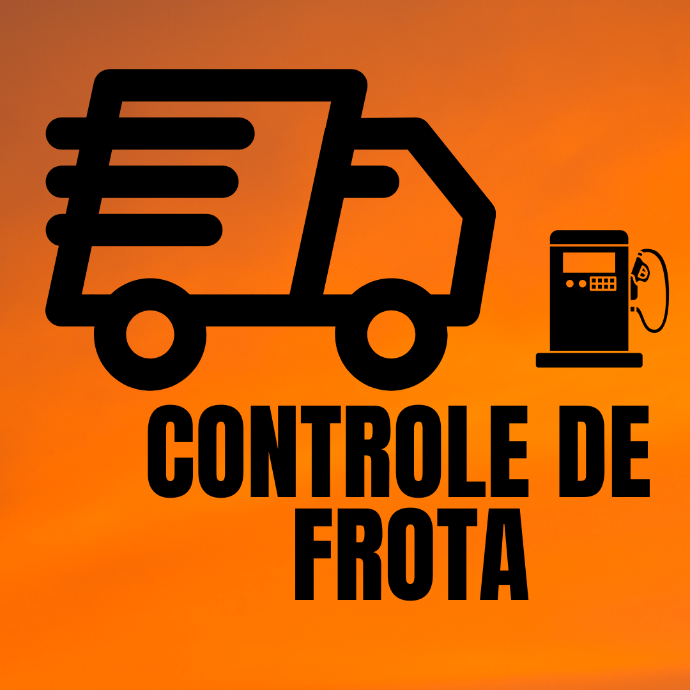

<nav class="navbar bg-body-tertiary" role="navegação">
  <div class="container">
    <a
    class="navbar-brand"
    href="#"
    [attr.aria-current]="currentClickNavbar === 'navbar-brand' ? 'page' : false "
    (click)="getClickNavbarForAriaCurrent('navbar-brand')">
      
    </a>
    <ul class="nav">
      <li class="nav-item">
        <a class="nav-link"
        [attr.aria-current]="currentClickNavbar === 'navbar-item-1' ? true : false "
        (click)="getClickNavbarForAriaCurrent('navbar-item-1')"
         href="#">Cadastro</a>
      </li>
      <li class="nav-item">
        <a class="nav-link"
        href="#"
        [attr.aria-current]="currentClickNavbar === 'navbar-item-2' ? true : false "
        (click)="getClickNavbarForAriaCurrent('navbar-item-2')"
        >Consulta</a>
      </li>
      <li class="nav-item">
        <a class="nav-link"
        href="#"
        [attr.aria-current]="currentClickNavbar === 'navbar-item-3' ? true : false "
        (click)="getClickNavbarForAriaCurrent('navbar-item-3')"
        >Sobre</a>
      </li>
    </ul>
  </div>
</nav>
